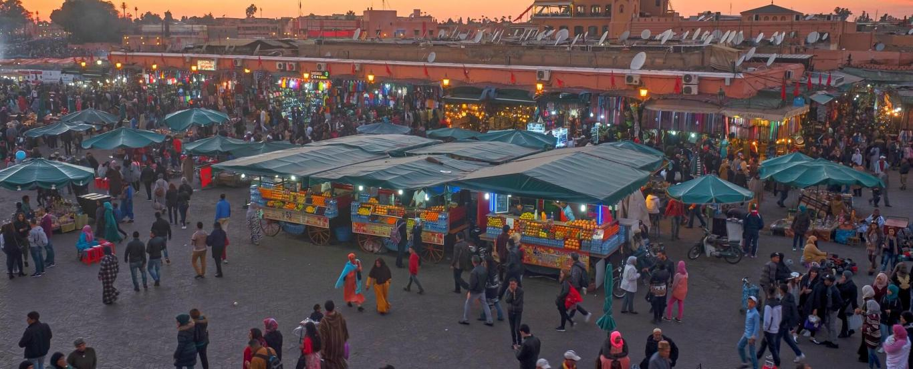

Culter and Tradition
The culture in Marrakech, just like any culture worldwide, plays an important part in shaping a city and its people. Marrakech is rich in culture and so diverse with its historical influences reflected through the beautiful architecture, delicious cuisine and welcoming people. The culture in the ‘red city’ is unique and has been strongly influenced by Arab and Islamic civilisations because of the vast Berber population. The culture in Marrakech is portrayed through language, religion, music, crafts, and tradition. 
Language
Berbers remain the largest ethnic group in the whole of Morocco and in Marrakech the main language spoken is Arabic. The Berber tongue remains significant and is still spoken within the country. French is taught in schools from an early age and has become the unofficial second language, however English is only understood in the areas with lots of tourists. Most people in Marrakech can speak around 3-4 languages so there shouldn’t really be a language barrier when you visit this incredible city. All the staff in our villas speak French and the majority can understand English so they can have a conversation with you about the food and service in the villa.
Music
The music in Marrakech has been influenced by a number of different cultures because of its geographical location. The music is a unique blend of Spanish, Middle Eastern, Sub Saharan, and indigenous Amazigh. This exclusive fusion of music has been the result of an interesting history. During the early years of Marrakech, Gnawa music, Andalucian and Sephardic music had a significant impact on the culture of the city. When the Europeans began to move in they brought new styles too which has ultimately created a rather rare sound. You can discover this mix at music events, concerts, and cultural festivals throughout the city. Our concierge, situated in Marrakech, can even organise private events with musicians and gnaoua at the villa with a belly dancer which makes a fantastic show with a traditional dinner.
Tradition
In order to get the real experience in Marrakech, a visit to the souks in the Medina will immerse you into a cultural whirlwind. Take a walk through the small and narrow streets and admire the items on display at each of the quaint stalls. This is the place where the locals go daily to purchase what they need for their meals. Have a chat with the stall owners and learn about their day to day life in the ‘red city’. Drinking mint tea is also tradition in the whole of Morocco and you must try it when you are there - a good cup of tea is served with many bubbles.